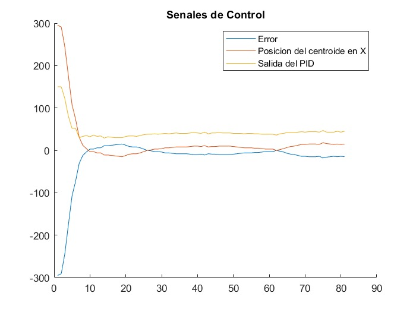
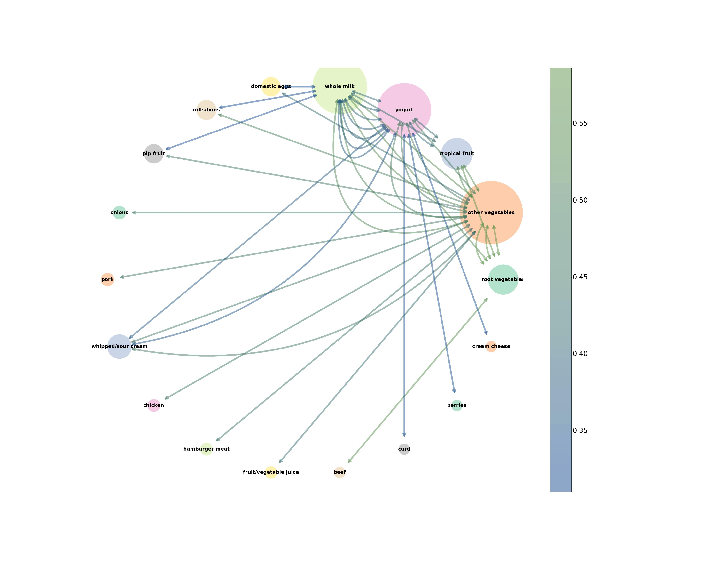

 test
Canasta de mercado
Los algoritmos de apriori y las reglas de asociacion nos permiten identificar que productos se
venden
juntos entre las
ventas que se realizan a diario, con ello podemos discernir que productos deben de tener decuntos o
mejor promocion, ademas
podemos respaldar experiencias empiricas con respuestas de analiticas de los datos.
 Mientras buscaba la forma de representar este tipo de informacion, he experimentado con las graficas de networks, creando representaciones visuales interactivas para explicar estos datos.